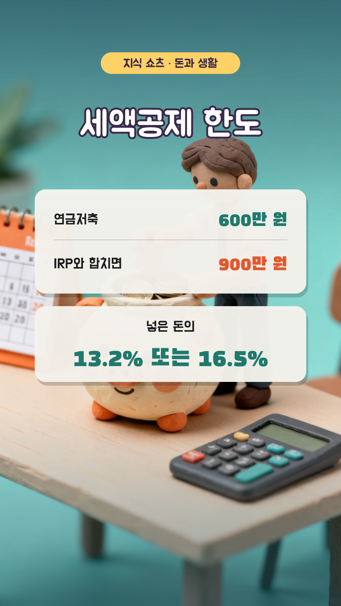
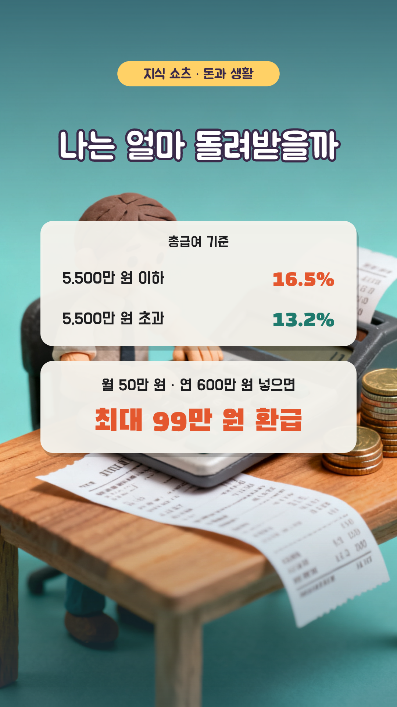
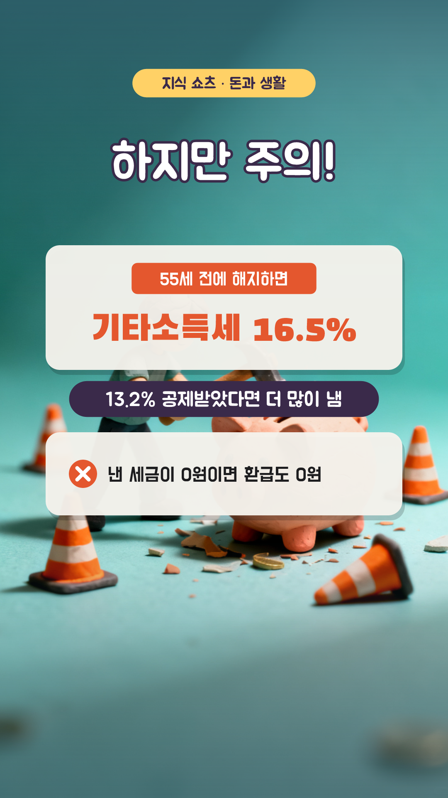
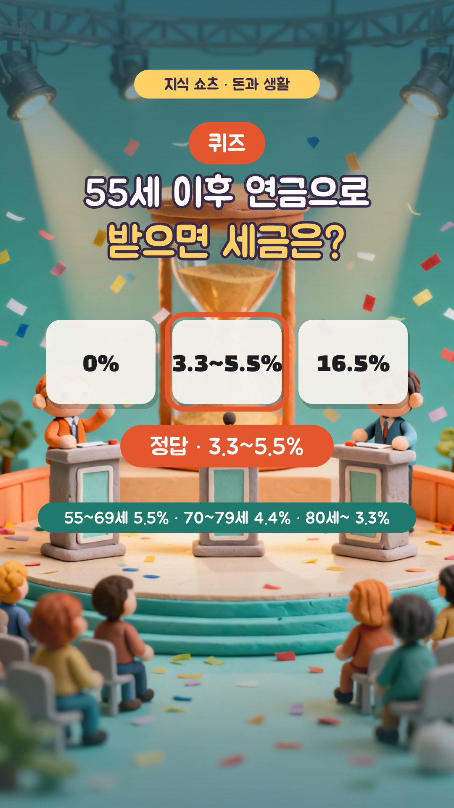

연금저축, 가입해야 할까? — 7컷 콘티
1분 (+ 썸네일 1초) · 1080×1920 · 30fps · 자막 카드 y=1480 · 내레이션 ko-KR-Chirp3-HD-Charon · 지식 쇼츠 21편 · 3D 클레이 AI(Seedream 4.0) + 인포그래픽
S01
0:00–0:04 · 4.6초
모션
ai 카메라 이동 0.0s, title 팝 0.0s, coins 팝 0.8s, name 도장 3.4s
내레이션
연말정산 때 최대 148만 원을 돌려받는 통장이 있다면? / 바로 연금저축이에요

S02
0:04–0:13 · 8.4초
모션
ai 카메라 이동 0.0s, title 팝 0.0s, limit 팝 0.4s, rate 아래에서 4.2s
내레이션
연금저축은 한 해 600만 원, IRP와 합치면 900만 원까지 / 넣은 돈의 13.2%나 16.5%를 세금에서 깎아 줘요

S03
0:13–0:21 · 8.0초
모션
ai 카메라 이동 0.0s, title 팝 0.0s, table 팝 0.4s, calc 아래에서 4.6s
내레이션
연봉 5,500만 원 이하라면 16.5%, 그보다 많으면 13.2%예요 / 월 50만 원씩 600만 원을 넣으면 최대 99만 원을 돌려받아요
S04
0:21–0:26 · 5.800000000000001초
모션
ai 카메라 이동 0.0s, title 팝 0.0s, who 와이프 ↓ 0.4s
내레이션
세금을 내는 직장인이나 자영업자에게 특히 유리해요 / 노후까지 오래 묶어 둘 수 있다면 더 좋고요

S05
0:26–0:35 · 8.2초
모션
ai 카메라 이동 0.0s, title 팝 0.0s, early 팝 0.4s, more 도장 4.0s, zero 아래에서 6.2s
내레이션
하지만 55세 전에 깨면 기타소득세 16.5%를 내야 해요 / 돌려받은 세금보다 더 낼 수도 있어요 / 낸 세금이 없다면 돌려받을 것도 없고요

S06
0:35–0:45 · 10.0초
모션
ai 카메라 이동 0.0s, badge 팝 0.0s, question 팝 0.3s, choices 팝 0.8s, answer 도장 4.6s, why 페이드 7.8s
내레이션
퀴즈! 55세 이후 연금으로 받으면 세금은 얼마일까? / 정답은, 3.3에서 5.5%예요! / 나이가 많을수록 세율이 낮아져요
S07
0:45–1:00 · 15.0초
모션
ai 카메라 이동 0.0s, look 팝 0.2s, button 팝 3.4s, finger 탭 4.0s
내레이션
내 소득과 계획에 맞는지 먼저 따져 보세요 / 더 많은 돈 이야기가 궁금하다면 구독해 주세요